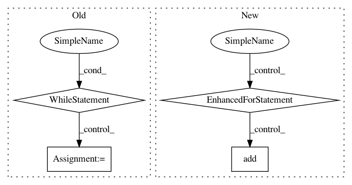

589c372da5e415c4c0c33171971d3b26102b8b3c,scipy/sparse/construct.py,,rand,#Any#Any#Any#Any#Any#Any#,660
Before Change
return np.unique(np.floor(ind * mn))[:k]
ind = _gen_unique_rand(random_state, gk)
while ind.size < k:
gk *= 1.05
ind = _gen_unique_rand(random_state, gk)
j = np.floor(ind * 1. / m).astype(tp)
i = (ind - j * m).astype(tp)
vals = random_state.rand(k).astype(dtype)
return coo_matrix((vals, (i, j)), shape=(m, n)).asformat(format)
After Change
else:
ind = np.empty(k, dtype=tp)
selected = set()
for i in xrange(k):
j = random_state.randint(mn)
while j in selected:
j = random_state.randint(mn)
selected.add(j)
ind[i] = j
j = np.floor(ind * 1. / m).astype(tp)
i = (ind - j * m).astype(tp)
vals = random_state.rand(k).astype(dtype)
return coo_matrix((vals, (i, j)), shape=(m, n)).asformat(format)
In pattern: SUPERPATTERN
Frequency: 3
Non-data size: 4
Instances
Project Name: scipy/scipy
Commit Name: 589c372da5e415c4c0c33171971d3b26102b8b3c
Time: 2014-05-29
Author: perimosocordiae@gmail.com
File Name: scipy/sparse/construct.py
Class Name:
Method Name: rand
Project Name: pgmpy/pgmpy
Commit Name: 764b22136f964c50bcf7d30c4f1efe6bdaabd50b
Time: 2014-01-08
Author: ankurankan@gmail.com
File Name: src/BayesianModel/BayesianModel.py
Class Name: BayesianModel
Method Name: _get_ancestors_observation
Project Name: biocore/scikit-bio
Commit Name: daf661c3edd949f8ac2cd70e4a725d9a055cc0c3
Time: 2016-06-27
Author: mcdonadt@colorado.edu
File Name: skbio/tree/_tree.py
Class Name: TreeNode
Method Name: shear